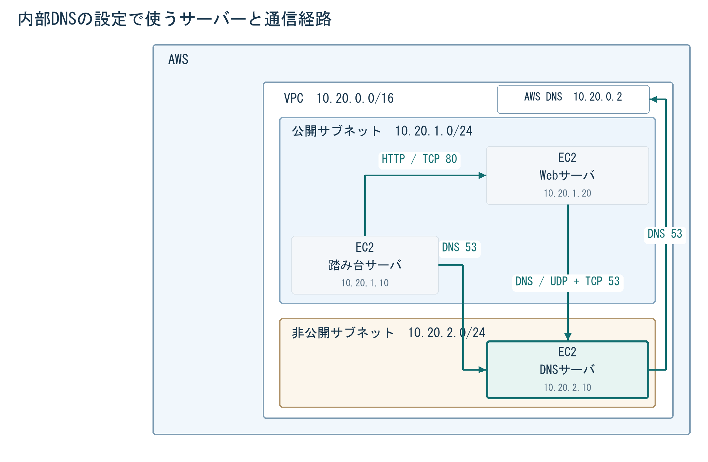

P2 内部DNSと通常の名前解決
対応する自力課題はM2。
このPractice2で作業すること
内部DNSにWeb・DBサーバーの名前を登録する。踏み台サーバーとWebサーバーがこのDNSを使うように設定し、P1のファイルを名前で開く。
今回の見取り図

解答例（操作手順）
P2.1 配布サーバーからBINDをインストールする
実行環境:
DNSサーバーのSSM端末：ssm-user
DNSサーバーで配布サーバーのパッケージ一覧を更新し、BINDと設定を確認するためのツールをインストールする。続けて、編集する設定ファイル2つの控えを作る。
入力するコマンド（番号はこの手順内の順番）
# 1. 配布サーバーのパッケージ一覧を更新する。
sudo apt-get update
# 2. 配布サーバーから bind9 bind9-utils と、動作に必要なパッケージをインストールする。
sudo apt-get install --no-install-recommends bind9 bind9-utils
# 3. 元ファイルを控えへコピーする。既存の控えは上書きしない。
sudo cp -an /etc/bind/named.conf.options /etc/bind/named.conf.options.before-p2
# 4. 元ファイルを控えへコピーする。既存の控えは上書きしない。
sudo cp -an /etc/bind/named.conf.local /etc/bind/named.conf.local.before-p2
期待する結果と読み方:
bind9 と bind9-utils がインストールされ、2つの .before-p2 ファイルができる。
P2.2 問い合わせを受け付けるサーバーを設定する
実行環境:
DNSサーバーのSSM端末：ssm-user
問い合わせを受け付けるのは、DNSサーバー自身、踏み台サーバー、Webサーバーの3台。演習の外の名前はAWSのDNS（10.20.0.2）に問い合わせる。
ファイルの内容を下の設定に置き換えて保存する。検索するときはnanoの Ctrl+W、保存するときは Ctrl+O、Enter、終了は Ctrl+X を使う。
sudo nano /etc/bind/named.conf.options
nanoに入力する内容
acl "jdu_clients" { 127.0.0.1; 10.20.1.10; 10.20.1.20; };
options {
directory "/var/cache/bind";
listen-on { 127.0.0.1; 10.20.2.10; };
listen-on-v6 { none; };
allow-query { jdu_clients; };
allow-recursion { jdu_clients; };
allow-query-cache { jdu_clients; };
recursion yes;
forward only;
forwarders { 10.20.0.2; };
dnssec-validation no;
allow-transfer { none; };
};
期待する結果と読み方:
listen-on にDNSサーバー自身の内部IP 10.20.2.10、forwarders にAWSのDNS 10.20.0.2 が入る。
P2.3 名前とIPv4アドレスを登録する
実行環境:
DNSサーバーのSSM端末：ssm-user
named.conf.local で、lab.test のゾーンファイルがどこにあるかをBINDに指定する。db.lab.test に、一つの名前とIPv4アドレスを一組にしてAレコードを書く。
既存の named.conf.local の末尾に次のブロックを追加する。lab.test のブロックが既にあれば、そのブロックを編集する。
sudo nano /etc/bind/named.conf.local
nanoに入力する内容
zone "lab.test" {
type primary;
file "/etc/bind/zones/db.lab.test";
allow-transfer { none; };
allow-update { none; };
};
nanoで /etc/bind/zones/db.lab.test を開き、下の設定を入力して保存する。
sudo mkdir -p /etc/bind/zones
sudo chmod 0755 /etc/bind/zones
sudo nano /etc/bind/zones/db.lab.test
nanoに入力する内容
$TTL 300
@ IN SOA dns.lab.test. hostmaster.lab.test. (
2026102301 3600 600 604800 300 )
@ IN NS dns.lab.test.
dns IN A 10.20.2.10
guide IN A 10.20.1.20
practice-db IN A 10.20.2.20
期待する結果と読み方:
guide.lab.test はWebサーバーの 10.20.1.20、practice-db.lab.test はDBサーバーの 10.20.2.20 に対応する。
うまくいかないとき:
すでにゾーンファイルがある場合は、既存の名前を残して練習用の2件を追加する。レコードを変更するたびに、SOAのシリアル番号を現在の値より増やす。
P2.4 BINDを起動してDNSサーバー自身から問い合わせる
実行環境:
DNSサーバーのSSM端末：ssm-user
設定とゾーンファイルにエラーがないことを確かめてからBINDを起動する。dig はDNSに問い合わせてレスポンスを表示するコマンド。ここでは自分自身を指す 127.0.0.1 を問い合わせ先にする。
入力するコマンド（番号はこの手順内の順番）
# 1. BINDの設定と参照zoneを構文検査する。
sudo named-checkconf -z
# 2. lab.testのzoneファイルを検査する。
sudo named-checkzone lab.test /etc/bind/zones/db.lab.test
# 3. named を次回のOS起動時に自動起動させる。
sudo systemctl enable named
# 4. named を再起動して設定を読み直す。
sudo systemctl restart named
# 5. UDP 53で guide.lab.test を問い合わせ、応答を読む。
dig @127.0.0.1 guide.lab.test A
# 6. TCP 53で guide.lab.test を問い合わせ、応答を読む。
dig @127.0.0.1 guide.lab.test A +tcp
期待する結果と読み方:
ゾーンファイルの検査で OK が表示される。UDPとTCPのどちらでも NOERROR が返り、guide.lab.test のIPは 10.20.1.20 になる。
うまくいかないとき:
失敗ならsudo journalctl -u named -n 30 --no-pagerで対象行を調べ、設定を直して再検査する。
P2.5 踏み台サーバーとWebサーバーからBINDを試す
実行環境:
踏み台サーバーとWebサーバーのSSM端末
両方のサーバーで実行する。dig の @10.20.2.10 は、その1回の問い合わせ先を指定する。AXFR はゾーンのレコードをまとめて転送するための指定で、この演習では拒否されることを確かめる。
入力するコマンド（番号はこの手順内の順番）
# 1. UDP 53で guide.lab.test を問い合わせ、応答を読む。
dig @10.20.2.10 guide.lab.test A
# 2. TCP 53で practice-db.lab.test を問い合わせ、応答を読む。
dig @10.20.2.10 practice-db.lab.test A +tcp
# 3. UDP 53で absent-p2.lab.test を問い合わせ、応答を読む。
dig @10.20.2.10 absent-p2.lab.test A
# 4. UDP 53で aws.amazon.com を問い合わせ、応答を読む。
dig @10.20.2.10 aws.amazon.com A
# 5. zone全件の転送を要求し、明示的に拒否されるか調べる。
dig @10.20.2.10 lab.test AXFR
期待する結果と読み方:
guide.lab.test は 10.20.1.20、practice-db.lab.test は 10.20.2.20。未登録の名前は NXDOMAIN、外部名 aws.amazon.com にはIPアドレスが返り、ゾーン転送は拒否される。
P2.6 Ubuntu OSが普段使うDNSを設定する
実行環境:
踏み台サーバーとWebサーバーのSSM端末
踏み台サーバーとWebサーバーを1台ずつ設定する。ブラウザやアプリが名前を調べるときに使うDNSを、Ubuntu OSのNetplanで 10.20.2.10 に指定する。
まずネットワークインターフェース名とNetplanのファイル名を調べる。
ip -br link
ls /etc/netplan
例の ens5 と YOUR-NETPLAN-FILE.yaml を実際の名前に置き換える。networkctl status の Network File に表示される名前も、対応するNetplanのファイルを見つける手掛かりになる。
networkctl status ens5
下は既存ファイルを編集するための例。自分のファイルのインターフェースの下に dhcp4-overrides と nameservers を追加または修正する。すでにあるインターフェース名とその他の設定は残す。
sudo cp -an /etc/netplan/YOUR-NETPLAN-FILE.yaml /etc/netplan/YOUR-NETPLAN-FILE.yaml.before-p2
sudo nano /etc/netplan/YOUR-NETPLAN-FILE.yaml
nanoに入力する内容
network:
version: 2
ethernets:
ens5:
dhcp4: true
dhcp4-overrides:
use-dns: false
nameservers:
addresses: [10.20.2.10]
期待する結果と読み方:
DHCPでIPアドレスを受け取る設定を残し、DNSに限って自動取得を止める。YAMLのインデントをそろえて保存する。
うまくいかないとき:
同じinterfaceが複数YAMLにあると値がmergeされる。resolvectl dnsにAWS DNSが残る場合は、対応する全YAMLとruntimeの設定を確認する。
P2.7 DNSの設定を反映して名前でページを開く
実行環境:
踏み台サーバーとWebサーバーのSSM端末
Netplanの設定を反映する。resolvectl dns で実際に使うDNSサーバーを確かめ、getent でUbuntu OSが名前をどう解決するかを見る。その名前を使ってP1のファイルを取得する。
入力するコマンド（番号はこの手順内の順番）
# 1. netplan YAMLから設定を生成し、適用前の構文を検査する。
sudo netplan generate
# 2. 保存したnetplan設定をネットワークへ適用する。
sudo netplan apply
# 3. systemd-resolved を再起動して設定を読み直す。
sudo systemctl restart systemd-resolved
# 4. 通常の名前解決に使うDNSサーバーを表示する。
resolvectl dns
# 5. 通常のresolverで guide.lab.test のIPv4を調べる。
getent ahostsv4 guide.lab.test
# 6. 通常のresolverで practice-db.lab.test のIPv4を調べる。
getent ahostsv4 practice-db.lab.test
# 7. http://guide.lab.test/practice.txt へHTTPリクエストを送る。
curl -i http://guide.lab.test/practice.txt
期待する結果と読み方:
resolvectl dns のDNSは 10.20.2.10。名前はそれぞれ 10.20.1.20 と 10.20.2.20 になり、HTTP 200 と JDU WEB-02 practice: HTTP response verified. が返る。
うまくいかないとき:
dig成功/getent失敗ならclient resolverを調べる。FirefoxはDoH無効の教師設定を維持する。
P2.8 踏み台サーバーのブラウザで表示を確かめる
実行環境:
RDP内のFirefox（踏み台）
P0の手順で踏み台サーバーへRDP接続する。踏み台サーバー上のFirefoxで http://10.20.1.20/practice.txt、次に http://guide.lab.test/practice.txt を開く。最後に自分のPCの採点ページでP2を確認する。
期待する結果と読み方:
どちらのURLでも JDU WEB-02 practice: HTTP response verified. が表示される。採点ページでP2の13項目を確認できる。
出力の読み取り例（入力しない）
status: NOERROR
guide.lab.test. 300 IN A 10.20.1.20
dig出力の説明用抜粋。Aの右が回答IPv4、300がTTL。回答が出ても、問い合わせ先SERVERが10.20.2.10かを別に確認する。